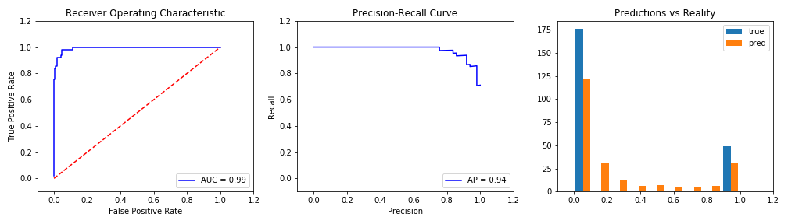

Up sampling Yeas. This will duplicate Yeas until Training is 50% Yeas. All Entries: 1124 Affirmitive examples: 235 (21%) Training: 1426 Affirmitive examples: 713.0 (50.0%) Testing: 225 Affirmitive examples: 49.0 (22.0%)

0s: 0.78 True Positives: 45 Accuracy: 0.96 1s: 0.22 True Negatives: 171 AUC: 0.9932745825602969 False Positives: 5 F1 Score: 0.9090909090909091 False Negatives: 4 Recall (fract of actual yeas found): 0.9183673469387755 Precision (correctness of yeas predicted): 0.9
Trianed on 2019-04-23_95p-confidence_binary.csv. Embedding = "word2vec". Model = "VotingClassifier(estimators=[('logistic', LogisticRegression(C=1000000000.0, class_weight='balanced', dual=False, fit_intercept=False, intercept_scaling=1, max_iter=100, multi_class='ovr', n_jobs=1, penalty='l2', random_state=None, solver='liblinear', tol=0.0001, verbose=0, warm_start=F...subsample=1.0, verbose=0, warm_start=False)), ('GaussianNB', GaussianNB(priors=None))], flatten_transform=None, n_jobs=1, voting='soft', weights=[1, 1, 1, 1, 1])".